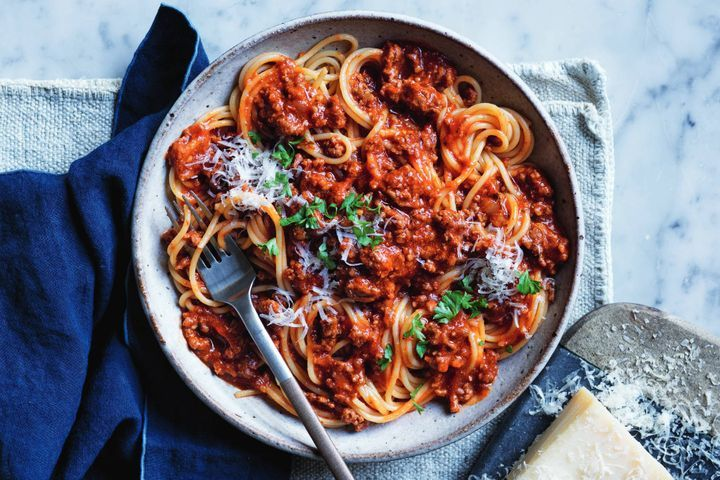

Home
Pizza

Description
We've turned cheesy pizza into an easy traybake, perfect for a weekend brunch date or as a lunchbox filler.
Ingredients
- 7g sachet dried yeast
- 2 tsp caster sugar
- 3/4 cup warm water
- 2 desiree potatoes, chopped
- 2 cups bread and pizza flour
- 1 tsp salt
- 2 tbsp extra virgin olive oil, plus extra for drizzling
- 1/2 cup tomato passata
- 1 1/2 cups grated pizza cheese
- 200g cherry truss tomatoes, cut into small bunches
- 1 chorizo, thinly sliced diagonally
- 1/2 cup fresh flat-leaf parsley leaves
Steps
- Preheat oven to 240C/220C fan-forced. Grease a 3cm-deep, 24.5cm x 37.5cm (base) baking tray with baking paper.
- Combine yeast, sugar and warm water in a jug. Stand for 10 minutes or until frothy.
- Meanwhile, place the potato in a microwave-safe bowl. Cover with plastic wrap. Cook on HIGH (100%) for 3 minutes
or until almost tender.
- Combine flour and salt in a large bowl. Make a well in the centre. Add yeast mixture and half the oil. Stir
until a dough forms. Turn out onto a clean work surface. Knead for 2 minutes or until smooth. Using a rolling pin,
roll out dough between two sheets of baking paper until large enough to line base of prepared tray. Press dough
into tray.
- Leaving a 1.5cm border, spread passata over dough. Sprinkle with pizza cheese. Top with tomatoes. Bake for 8 to
10 minutes or until cheese and base are golden.
- Meanwhile, heat remaining oil in a large frying pan over medium-high heat. Add chorizo. Cook, stirring
occasionally, for 3 minutes or until crisp. Add potato. Cook for a further 3 to 4 minutes or until potato is
golden. Transfer to paper towel to drain.
- Top pizza with chorizo mixture and parsley. Drizzle with extra oil. Serve.